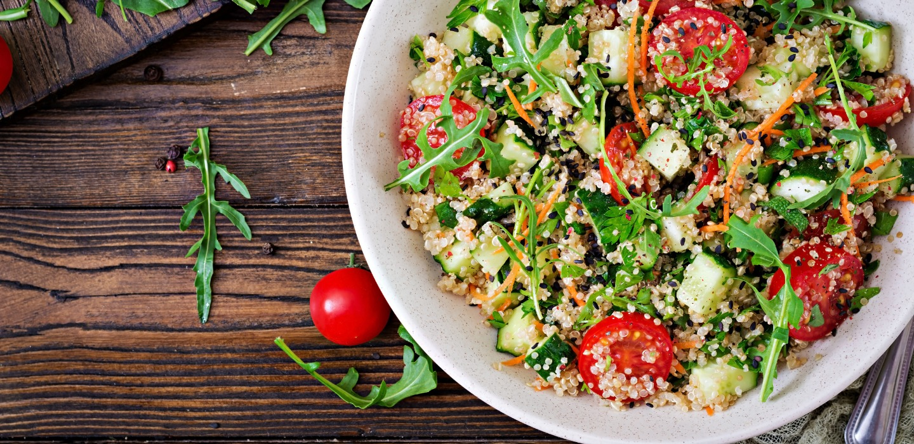
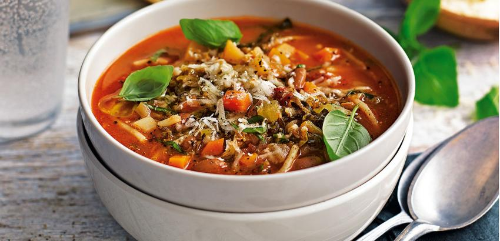

Platos



-
Bruschetta al Pomodoro: Pan tostado con tomate
fresco, ajo, albahaca y aceite de oliva.
-
Misto: Selección de embutidos italianos, quesos,
aceitunas y vegetales en escabeche.
-
Minestrone: Sopa clásica de verduras con pasta
pequeña.
-
Insalata Caprese: Rodajas de tomate, mozzarella
fresca, albahaca, y un toque de aceite de oliva y balsámico.
-
Spaghetti alla Carbonara: Espaguetis con salsa de
huevo, panceta, queso pecorino y pimienta negra.
-
Fettuccine Alfredo: Fettuccine en una cremosa
salsa de mantequilla y parmesano.
-
Penne Arrabbiata: Penne en una salsa de tomate
picante con ajo y perejil.
-
Lasagna Bolognese: Capas de pasta con ragú de
carne, bechamel y queso gratinado.
-
Ravioli di Ricotta e Spinaci: Raviolis rellenos
de ricota y espinacas, servidos con salsa de mantequilla y salvia.
-
Tagliatelle al Tartufo: Tagliatelle con salsa de
crema y trufa negra.
-
Gnocchi alla Sorrentina: Ñoquis de papa con salsa
de tomate, albahaca y mozzarella fundida.
-
Pappardelle al Ragù di Cinghiale: Pappardelle con
ragú de jabalí, una especialidad toscana.
-
Spaghetti Aglio e Olio: Espaguetis con ajo,
aceite de oliva, peperoncino y perejil.
-
Penne al Pesto: Penne con salsa de pesto genovés,
piñones y parmesano.
-
Linguine alle Verdure: Linguine con una mezcla de
verduras frescas salteadas y un toque de ajo.